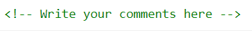

With comments you can place notifications and reminders in your HTML code
Comments are also great for debugging HTML,
because you can comment out HTML lines of code, one at a time, to search for errors
The compiler don't read your Comments
It just skips commented line of code.
Syntex

Developed by Ameya Deogirkar
Powered by Tail-Blocks-CSS
With comments you can place notifications and reminders in your HTML code
Comments are also great for debugging HTML,
because you can comment out HTML lines of code, one at a time, to search for errors
The compiler don't read your Comments
It just skips commented line of code.